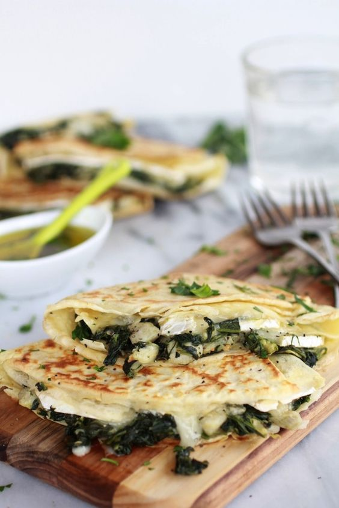
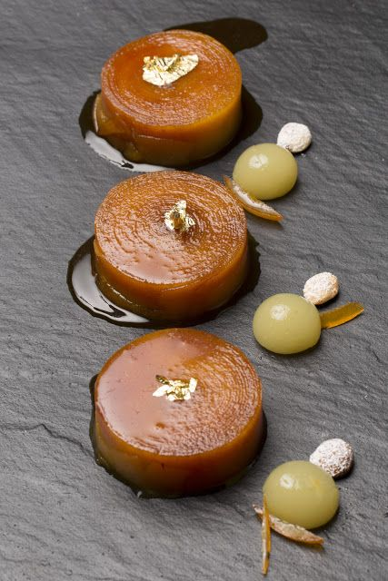
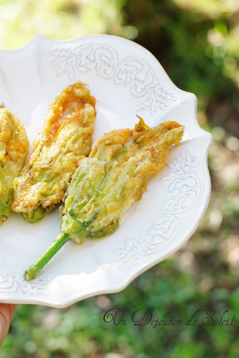

LA PÂTE À CRÊPES
Ingredients:
Préparation pour faire :

TARTE TATIN
Ingredients (pour 2):
Préparation pour faire :

BEIGNETS DE FLEURS DE COURGETTES
Ingredients:
Préparation pour faire :
Une émulsion Noilly-Prat pour sublimer vos coquillagesE
Ingredients:
Préparation pour faire :
image aliments
FRUITS DE MER AU CURRY
Ingredients:
Préparation pour faire :